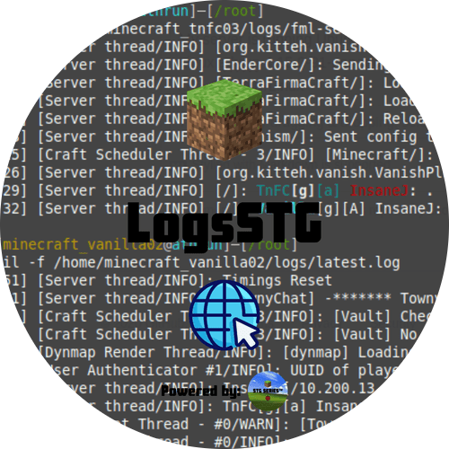

Live tail
New log lines stream to the page as they print. Connect late and still get recent history from config.

LogsSTG serves a local page with the live Paper console and a command line at the bottom.
Scroll the log, run commands (leading / optional), and use arrow keys to recall history — default http://127.0.0.1:8765/.
New log lines stream to the page as they print. Connect late and still get recent history from config.
The bottom line runs real server commands. Up/down arrows cycle through what you typed before.
Defaults to 127.0.0.1 so only your machine can reach it — change bind only if you understand the risk.
Download the jar that matches your server from CurseForge or GitHub Releases.
Binding host to anything other than 127.0.0.1 lets anyone who can reach the port run console commands.